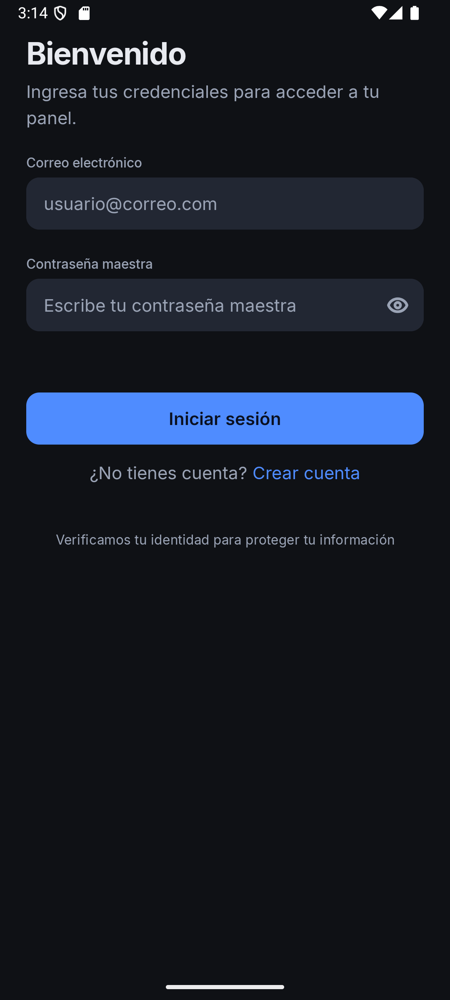
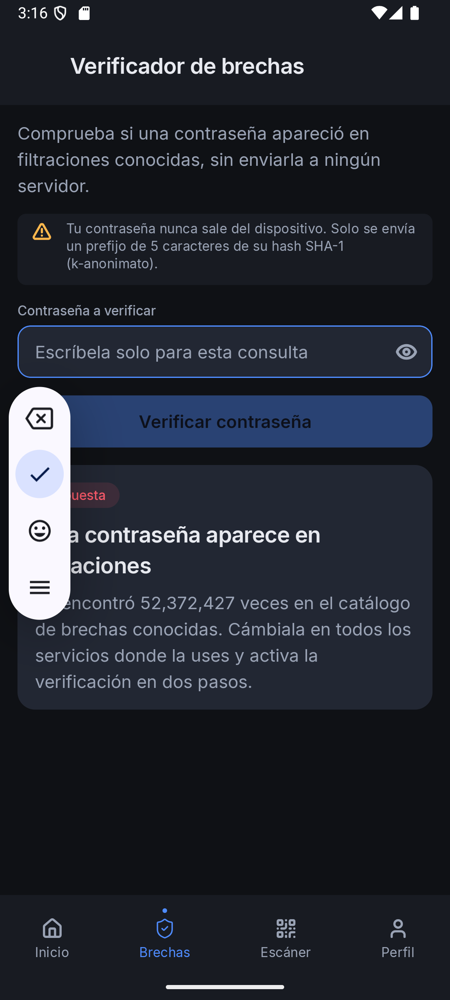
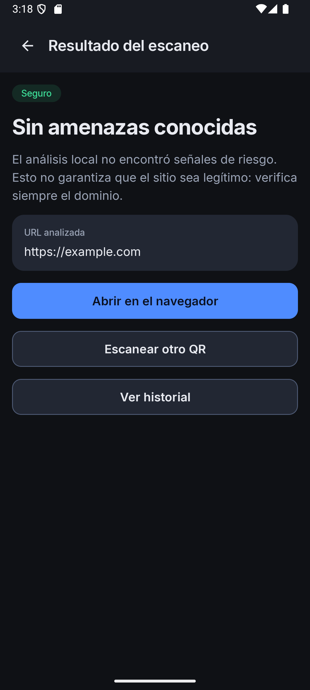
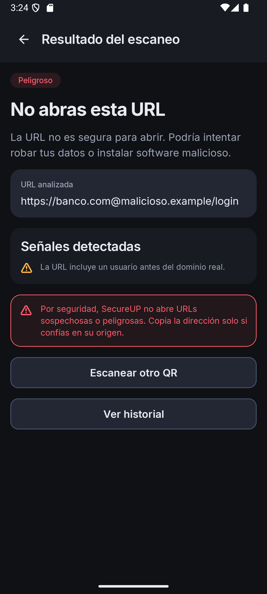
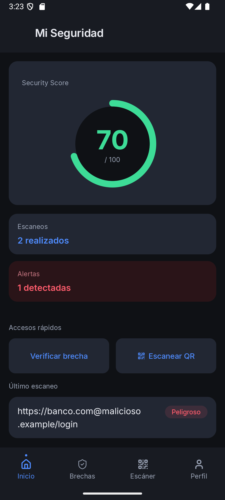
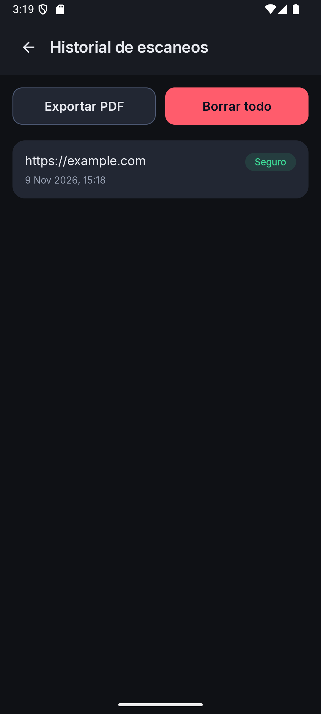

Aplicación Android de seguridad digital personal.
Verificación de contraseñas filtradas, escaneo de QR y análisis de URLs.
SecureUP es una aplicación Android que reúne tres herramientas de seguridad personal en una sola cuenta: la verificación de contraseñas expuestas en brechas conocidas, el escaneo de códigos QR con análisis de la URL de destino y el historial local de los escaneos realizados.
La entrega 26.2.1 implementa un corte vertical completo y verificable: autenticación simulada, verificador de brechas contra la API real de Have I Been Pwned, escáner QR con CameraX y ML Kit, análisis heurístico local, persistencia en Room, exportación del historial a PDF y perfil con cierre de sesión. La aplicación compila, pasa el análisis estático y las 71 pruebas unitarias, y fue probada en un dispositivo físico y en un emulador. Esta entrega incluye splash nativo con la marca y deduplicación de escaneos QR para que un mismo código no se registre varias veces en el historial.
Una persona reutiliza contraseñas y abre enlaces sin comprobar su origen. Ambas conductas son frecuentes y difíciles de detectar a simple vista: una contraseña filtrada sigue funcionando hasta que alguien la usa, y un QR puede esconder una URL maliciosa detrás de una apariencia legítima.
Las soluciones habituales exigen enviar la contraseña a un servidor o instalar varias aplicaciones. SecureUP propone lo contrario: verificar sin revelar y analizar antes de abrir, manteniendo los datos en el dispositivo.
| Requisito | Estado | Cómo se cumple |
|---|---|---|
| API real | ✅ | HIBP Pwned Passwords (consulta HTTPS con k-anonimato) |
| Persistencia | ✅ | Room 2.8.5, entidad, DAO y esquema exportado |
| Integración 1 | ✅ | CameraX para la vista de cámara |
| Integración 2 | ✅ | ML Kit Barcode Scanning (cámara y galería) |
| Integración 3 | ✅ | SAF + PdfDocument y Photo Picker del sistema |
| Arquitectura MVVM | ✅ | Pantalla → ViewModel → Repository → Room/Retrofit |
| Bóveda de contraseñas | ⏳ | Pospuesta a 26.3.1 por decisión de alcance |
| Backend propio | ⏳ | Proyecto separado, aún no disponible |
La aplicación sigue el patrón Model-View-ViewModel con una separación estricta de responsabilidades. Las pantallas Compose no contienen lógica de negocio, red, criptografía ni acceso a datos: solo pintan un estado inmutable y emiten eventos.
Compose (ui/screens) ──eventos──▶ ViewModel (StateFlow) ──▶ Repository
▲ │
└────────────── UiState ◀───────────────────────────────┘
│
┌────────────────┴────────────────┐
▼ ▼
Room (historial QR) Retrofit (HIBP)
| Capa | Paquete | Responsabilidad |
|---|---|---|
| UI | ui/screens, ui/components, ui/navigation, ui/theme | Pintar estado, emitir eventos y navegar. Sin lógica de negocio. |
| Presentación | viewmodel | Exponer un UiState por pantalla como StateFlow y lanzar operaciones en viewModelScope. |
| Dominio | domain/model, domain/repository, domain/security | Modelos, contratos de repositorio y reglas puras como UrlAnalyzer. |
| Datos | data/local, data/remote, data/repository, data/scanner, data/export | Implementaciones concretas: Room, Retrofit, ML Kit, PDF. |
| Composición | di | AppGraph y AppContainer: un service locator simple inicializado en SecureUpApplication. |
data class de estado. La UI nunca muta el estado directamente.domain/repository. Las pruebas sustituyen HIBP por un doble sin necesidad de red.Dispatchers.IO y análisis de URL en Dispatchers.Default; nunca en el hilo principal.collectAsState() y StateFlow; el escáner limpia la URL detectada después de navegar para no repetir la acción al recomponer.Registro y login validan correo y contraseña maestra (mínimo 12 caracteres, confirmación en el registro). Al autenticarse, AuthViewModel guarda el User en SessionManager y la navegación limpia la pila para que «atrás» salga de la app. El cierre de sesión borra la sesión en memoria y vuelve al login.
Limitación: FakeAuthRepository acepta cualquier correo válido con contraseña de 12+ caracteres. No hay backend todavía.
HibpBreachRepository normaliza a NFC, calcula SHA-1 y separa prefijo (5 hex) y sufijo (35 hex).api.pwnedpasswords.com/range/{prefijo} con la cabecera Add-Padding: true.Resultado real durante la prueba: la contraseña password apareció 52 372 427 veces. La app mostró el badge «Expuesta» y el número formateado.
Preview e ImageAnalysis en modo KEEP_ONLY_LATEST. Un AtomicBoolean evita analizar dos fotogramas a la vez y cada ImageProxy se cierra en addOnCompleteListener, incluso si ML Kit falla.PickVisualMedia), sin permiso de almacenamiento. QrCodeReader reduce la imagen antes de decodificarla y recicla el bitmap.CAMERA se pide en tiempo de ejecución con explicación; si se deniega, queda la galería.enableTorch y anuncia su estado a los servicios de accesibilidad.UrlAnalyzer| Señal | Veredicto |
|---|---|
Esquema distinto de http/https, URL inválida o host vacío | Peligroso |
Usuario/contraseña embebidos (https://banco.com@malicioso.example) | Peligroso |
Sin TLS (http), IP literal, punycode (xn--), acortador conocido o URL de más de 150 caracteres | Sospechoso |
| Sin señales | Seguro (sin amenazas conocidas) |
Solo las URLs seguras muestran «Abrir en el navegador». Las demás muestran las señales detectadas y un aviso; la URL completa siempre es visible y seleccionable. Nunca se abre automáticamente.
El escaneo se guarda en Room con URL, veredicto y marca de tiempo. La pantalla de historial observa la base de datos y permite:
PdfDocument genera una tabla con fecha, veredicto y URL (15 filas por página) y la escribe en el Uri que devuelve el selector de documentos (SAF). No requiere permisos de almacenamiento.DELETE sobre la tabla.HomeViewModel observa el historial y calcula el score con datos reales: 100 − 30 × peligrosas − 10 × sospechosas, acotado entre 0 y 100. También muestra el total de escaneos, las alertas y el último escaneo. El perfil muestra el correo de la sesión, la versión y el cierre de sesión.
Se usa la API v3 de Pwned Passwords, que no requiere clave. El contrato se declara con Retrofit:
@GET("range/{prefix}")
@Headers("Add-Padding: true", "User-Agent: SecureUP-Android")
suspend fun getRange(@Path("prefix") prefix: String): Response<String>
| Aspecto | Implementación |
|---|---|
| Privacidad | Solo viaja el prefijo SHA-1 de 5 caracteres; el resto se compara en el dispositivo. |
| Normalización | java.text.Normalizer NFC antes de calcular el hash. |
| Relleno | Add-Padding evita que el tamaño de la respuesta delate el prefijo. |
| Errores | 5xx → servidor; 4xx y IOException → red; cuerpo vacío o línea mal formada → respuesta inválida. |
| Pruebas | 7 pruebas con una implementación falsa de HibpApi: prefijo enviado, sufijo encontrado, relleno, error de red y NFC. |
La API propia (registro, login y vault) sigue pendiente. Cuando exista, el cliente enviará auth_hash derivado con PBKDF2 + HKDF y el blob cifrado con AES-256-GCM; la contraseña maestra nunca se enviará.
| Elemento | Detalle |
|---|---|
| Entidad | ScanHistoryEntity → tabla scan_history: id autogenerado, url, verdict (texto), scannedAt. |
| DAO | observeAll(): Flow<List<ScanRecord>>, insert, clear. |
| Base | SecureUpDatabase, versión 1, instancia única con doble comprobación. |
| Esquema | Exportado en app/schemas/ y versionado en el repositorio para futuras migraciones. |
| Repositorio | RoomScanHistoryRepository mapea entidad ↔ modelo de dominio. |
El veredicto se guarda como texto (SAFE, SUSPICIOUS, DANGEROUS) para que la base siga siendo legible si cambia el orden del enum. El historial no se cifra porque solo contiene URLs y veredictos, no credenciales; la bóveda, que sí contiene secretos, tendrá cifrado AES-GCM en la siguiente entrega.
| Integración | Uso | Cuidado aplicado |
|---|---|---|
| CameraX 1.6.2 | Vista previa y análisis de fotogramas | Un análisis a la vez; unbindAll() antes de enlazar; fotogramas siempre cerrados. |
| ML Kit Barcode 17.3.0 | Detección de QR en cámara y galería | Procesamiento local; bitmap reducido y reciclado; cliente cerrado al salir. |
| Photo Picker | Elegir una imagen sin permisos de almacenamiento | Solo se accede al Uri elegido por el usuario. |
| SAF + PdfDocument | Exportar el historial | El destino lo elige el usuario; sin WRITE_EXTERNAL_STORAGE. |
| Control | Implementación verificada |
|---|---|
| Contraseña maestra | Nunca se persiste ni se envía; solo vive en memoria durante la sesión. |
| KDF y cifrado (entrega previa) | PBKDF2-HMAC-SHA256 con mínimo 600 000 iteraciones y HKDF-Expand de un bloque para auth_hash y clave del vault; AES-256-GCM con nonce de 12 bytes y AAD = UUID. |
| Brechas | k-anonimato: solo el prefijo SHA-1 de 5 caracteres; respuesta con relleno. |
| Red | Solo HTTPS; usesCleartextTraffic="false". |
| Manifest | allowBackup="false", un solo componente exportado (launcher), permisos INTERNET y CAMERA en tiempo de ejecución. |
| Registros | Sin Log.* en app/src/main; no se registran contraseñas, hashes ni tokens. |
| QR | URL no confiable: se muestra completa, se analiza antes de abrir y nunca se abre sola; solo http/https. |
| Secretos | Ninguna API key en la app ni en el repositorio. |
lintDebug terminó con 0 errores y 22 advertencias (targetSdk no reciente, recursos sin usar, plurales y avisos de versiones). No se encontraron llamadas a Log en el código de producción.
| Clase | Pruebas | Qué cubre |
|---|---|---|
CryptoManagerTest | 28 | Vectores de PBKDF2/HKDF, nonce distinto por operación, manipulación de ciphertext y AAD. |
UrlAnalyzerTest | 11 | HTTPS seguro, HTTP, IP, punycode, acortador, user-info, esquemas peligrosos y URL larga. |
HibpBreachRepositoryTest | 7 | Prefijo de 5, sufijo encontrado, relleno, error de red, respuesta vacía y NFC. |
AuthValidatorTest | 6 | Reglas de correo y contraseña maestra. |
AuthViewModelTest | 5 | Estados de carga, error y éxito. |
BreachViewModelTest | 5 | Resultado, error, carga y borrado de la contraseña. |
FakeAuthRepositoryTest | 4 | Login y registro simulados, incluido el correo de error. |
ScannerViewModelTest | 4 | Deduplicación del mismo QR, ventana de tiempo y guardado de un QR distinto. |
ExampleUnitTest | 1 | Prueba base del proyecto. |
| Total | 71 | 0 fallos · testDebugUnitTest |
Además hay 6 pruebas instrumentadas de CryptoManager que repiten los vectores en el proveedor criptográfico de Android (Conscrypt) y una prueba base de instrumentación.
| Prueba | Resultado |
|---|---|
| Instalación del APK debug en teléfono físico (Android 16 / API 36) y emulador (API 35) | Correcta |
| Onboarding → login con credenciales válidas | Navega al Inicio con sesión |
Verificación real de password en HIBP | «Expuesta» · 52 372 427 apariciones |
QR seguro desde galería (https://example.com) | «Seguro» y botón para abrir |
QR peligroso (https://banco.com@malicioso.example/login) | «Peligroso», señal de user-info y sin botón de abrir |
| Cerrar el proceso y volver a entrar | El historial, las alertas y el score se conservan (Room) |
| Exportar historial a PDF | Archivo de 40 160 bytes generado en Descargas |
| Cerrar sesión | Vuelve al login y limpia la sesión |






Las capturas se tomaron en el emulador API 35 durante la verificación de esta entrega. El PDF de ejemplo está en docs/evidencias/ejemplo-historial.pdf.
| Limitación | Impacto | Trabajo futuro |
|---|---|---|
| Sin backend propio | Login y registro son simulados; no hay cuentas reales ni sincronización. | Implementar la API REST (registro, login, vault) y sustituir FakeAuthRepository. |
| Sin bóveda | No se guardan credenciales todavía. | Room cifrado + AES-256-GCM, pantallas de lista, detalle y alta. |
| Análisis de URL heurístico | No detecta campañas nuevas ni dominios recién registrados. | Proxy de Google Safe Browsing en el backend. |
| Score parcial | Solo considera escaneos, no la fortaleza de contraseñas. | Incorporar las métricas de la bóveda. |
| Historial sin cifrar | Contiene URLs visitadas, no secretos. | Valorar cifrado si se añaden datos sensibles. |
| Cambio de contraseña maestra y eliminación de cuenta | Pendientes de diseño y backend. | Implementarlos junto con la bóveda. |
La entrega demuestra un corte vertical funcional: una pantalla Compose que no sabe de red, un ViewModel que orquesta, un repositorio que decide el origen del dato y una fuente real (HIBP o Room). Las tres integraciones —API, cámara/ML y PDF/SAF— funcionan en un dispositivo y están cubiertas por pruebas o por verificación manual documentada.
El resultado más importante es de privacidad: la verificación de brechas se hizo contra el servicio real sin enviar la contraseña ni su hash completo. Ese mismo principio guiará la bóveda de la siguiente entrega: una sola derivación costosa, claves que nunca salen del dispositivo y cifrado autenticado por entrada.